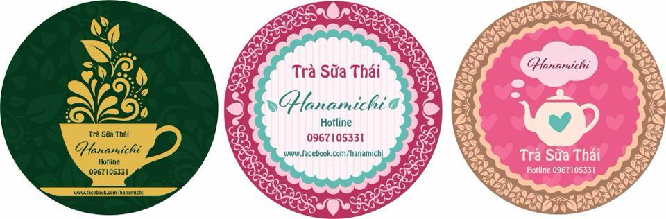

Hanamichi
0967105331
Hanamichi bán một số đồ ăn vặt và chủ yếu là bán trà thái xanh
Trà sữa là đồ uống phổ biến nhất ở Thái Lan, món này được bán ở mọi nơi, từ các quầy hàng rong cho tới các quán cafe, nhà hàng với giá từ 30 – 50baht, khoảng 20 – 35 ngàn đồng.
Trà sữa đỏ có tên gọi cha-yan, trà sữa xanh có tên gọi cha-kew sẽ là thức uống giải khát tuyệt vời trong cái nóng bức của đường phố Bangkok.
Khác với trà đá giản dị ở Việt Nam chỉ có trà và đá hay thêm một chút đường, trà đá Thái Lan cầu kỳ hơn nhiều trong cả hình thức lẫn nguyên liệu. Màu hổ phách của trà cùng màu nâu nhạt của lớp sữa phía trên giúp ly trà nổi bật trên bàn. Sự kết hợp giữa trà đặc, sữa và đường giúp bạn có được một loại thức uống tuyệt vời.
Đây là thức uống vừa có thể vừa nhâm nhi, vừa thưởng thức với tất cả các giác quan. Trà Thái kết hợp thêm với thạch cỏ thơm thanh mát, trung hòa với độ ngọt của trà, uống rất vừa miệng. Những miếng thạch mềm mại cũng khiến cho ly trà trở nên thú vị, hấp dẫn hơn, tạo thành một mùi vị đậm đà đầy cuốn hút.